Computie68k
Started October 03, 2019
A 68k-based computer, running a simple unix-like operating system. 68k-SBC is a single board computer with a 68010 CPU, 1MB SRAM, 1MB Flash, and a 68681 Dual UART controller. The OS is a simple monolithic kernel written in C, with preemptive multitasking via the 68681 timer interrupt.
68k-SMT is a mostly identical design using SMT and PLCC components. A CompactFlash card slot has been added to this version, but it is also possible to connect a simple breadboarded version to 68k-SBC.
For more details on how I got up and running, check out Bootstrapping a Homebuilt Computer Using An Arduino
The Operating System
Currently it doesn't have a name. It's largely based on reading Operating Systems Design and Implementation 2ed by Andrew S. Tanenbaum, although I've gone with a monolithic design, at least for the time being, for the simplicity of it. It can do preemptive multitasking using the 68681 timer. It also has an implementation of the minix version 1 filesystem, which uses RAM (through a device driver) to store the data, or a Compact Flash card connected as an IDE device. The second serial port can be configured as a SLIP device, with a basic implementation of UDP and TCP through a BSD sockets-style API, and an NTP command is provided for updating the system time on boot (when booting from disk).

The above video shows connecting over serial from a modern PC and resetting the hardware to run the monitor in ROM which displays the welcome message. The kernel is already loaded in RAM, so running the boot command will boot the kernel which then starts the shell. From the shell, some basic file operations and the ps command are shown.
The 68k Single Board Computer
A simple single board computer using a Motorola 68010 CPU, which can connect to a host computer via USB/TTL-Serial. It has a bus for connecting a supervisor arduino or expansion devices, but it can operate standalone using the onboard UARTs. It has 1MB of onboard Flash, 1MB of onboard SRAM, and a 68681 Dual UART chip with GPIO. Some of the GPIO pins are wired to 4 general purpose LEDs and 2 general purpose buttons.
The serial ports require external TTL-to-something conversion and are designed to be used with an FTDI USB-to-Serial cable or adapter. Two optional jumpers can be used to supply power to the board from one of the USB ports (only one should be jumped at a time, and only if the onboard power supply is disconnected). It typically takes about 365mA at 5V to power.
Two jumpers are provided to select what address the ROM will appear in (either 0x0000 or 0x2000), and whether to enable onboard DTACK generation for address space 0x0000. By moving the ROM to 0x2000 and disabling DTACK in 0x0000, a connected arduino can boot the 68000 directly.
I decided to use discrete 74 Series chips for the glue logic to keep it simple and easy for others to build. I tried to minimize the amount of logic chips needed, so it doesn't have a watchdog timer to trigger a bus error when an unmapped address is accessed.
It's currently clocked at 12MHz, although there seems to be an issue with the arduino's DTACK generation at that speed. It previously was working at 10MHz on the rev0 board.
The SBC version uses all DIP packaged chips and through-hole parts. The SMT version uses surface mount chips for the logic and ram, and PLCC packaged chips for the rest. A CompactFlash socket and a 74HC32 to accommodate it has been added and the power supply has been removed, but it is otherwise the same design.
SMT Revision 1
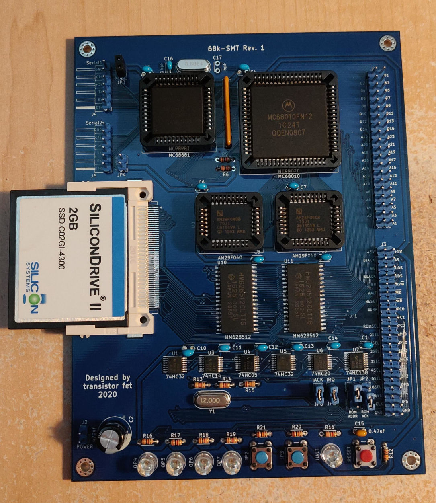 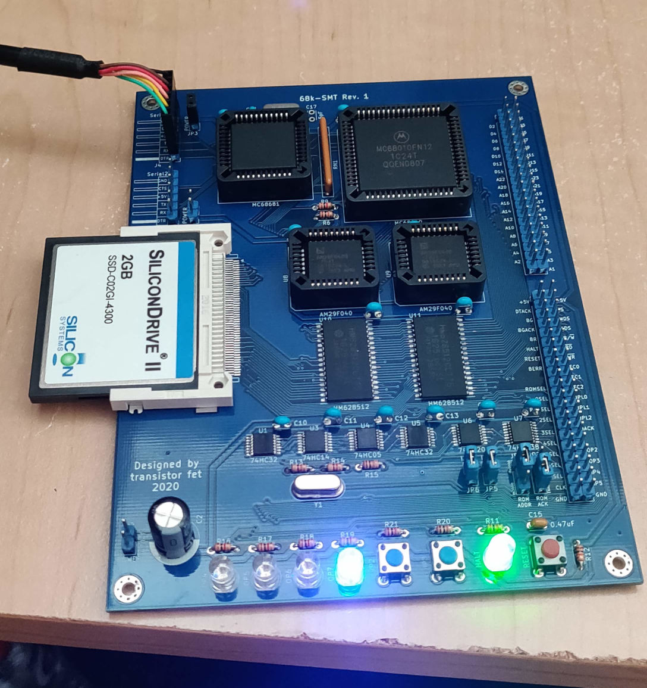
SBC Revision 2
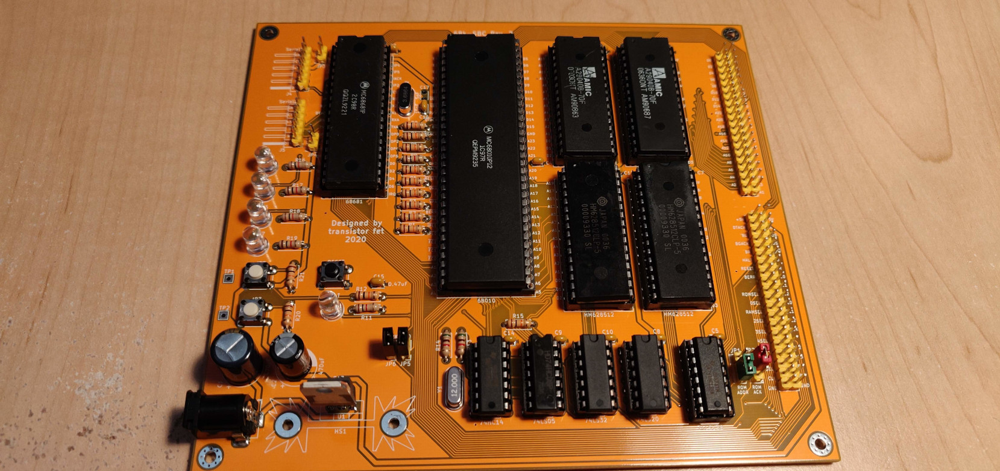 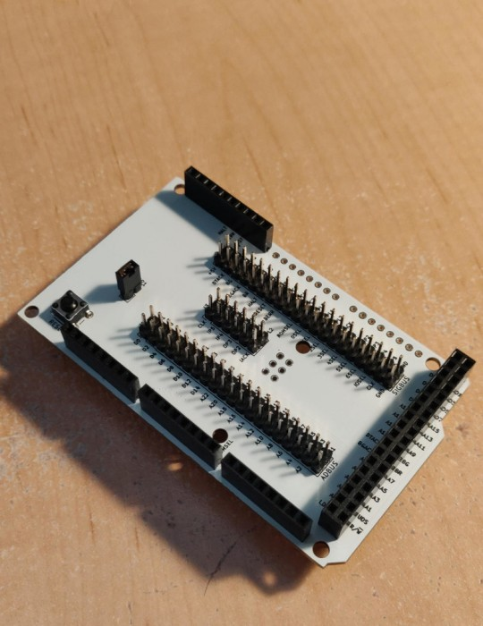 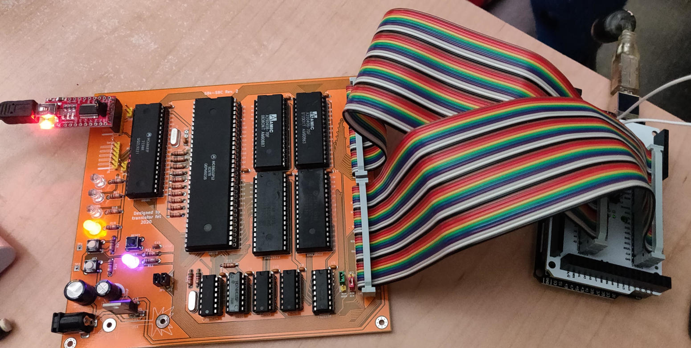 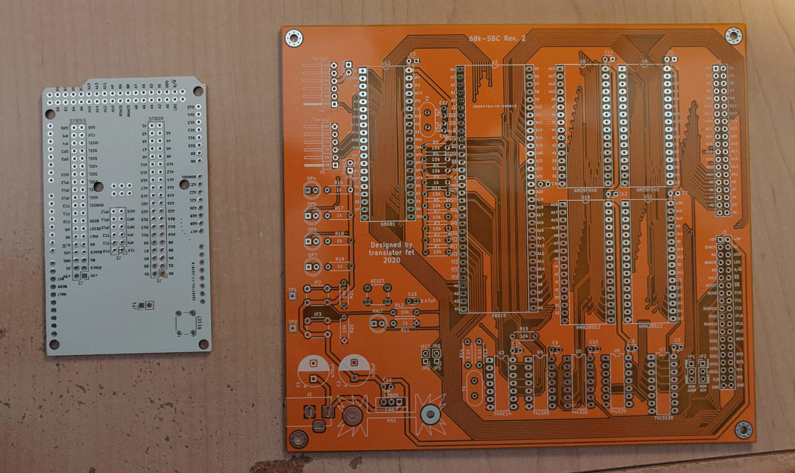
SBC Revision 0
This version has 64KB of EEPROM instead of Flash, and doesn't have onboard interrupt circuitry. It started off with a 68000 CPU, but that was later upgraded to a 68010 to allow for relocatable interrupt tables when using off-board interrupt circuitry.
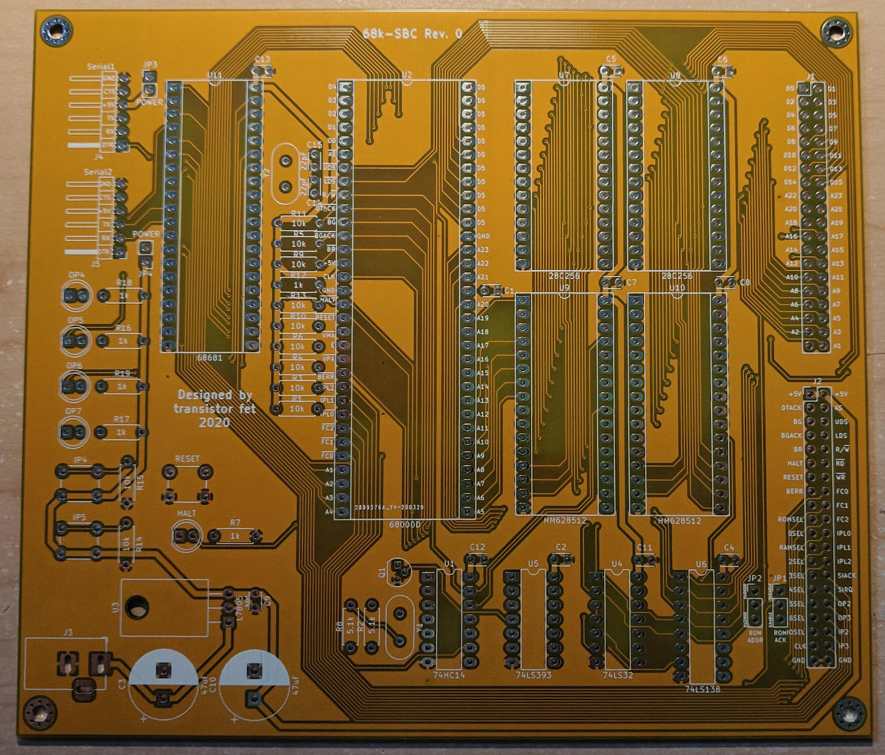 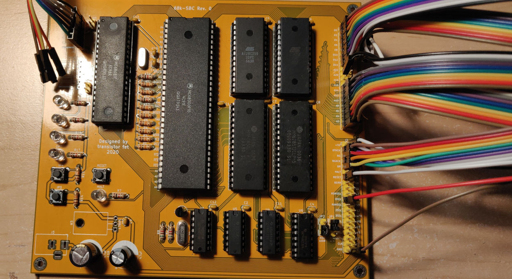 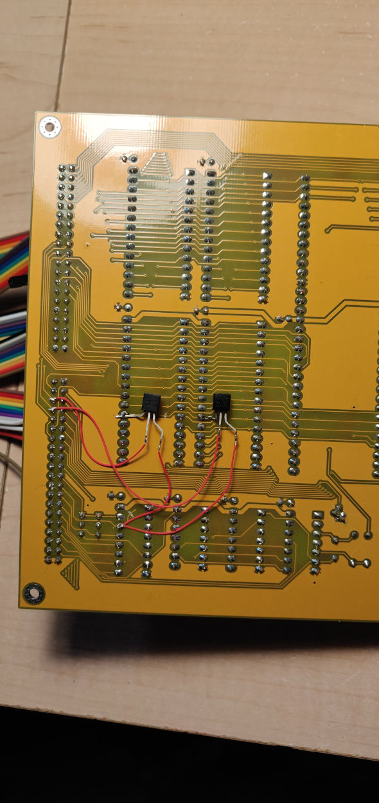
I made a mistake and left out the logic for LDS/UDS in the chip select for the high and low memory chips. When writing a single byte to memory, it would also attempt to write to both the high and low chips, instead of only one. Thanks to a poster on EEVblog who suggested patching it with a P-channel MOSFET shown soldered to the back of the SRAM chips to interpose the UDS/LDS signals into the chip selects, with the original traces cut.
Breadboard Version
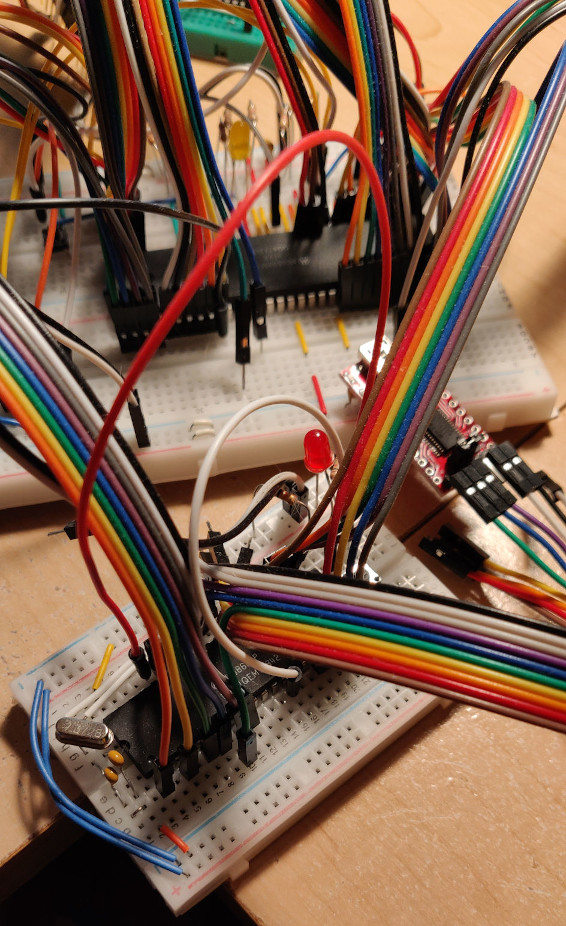
Operating System Booting From Monitor/Compact Flash
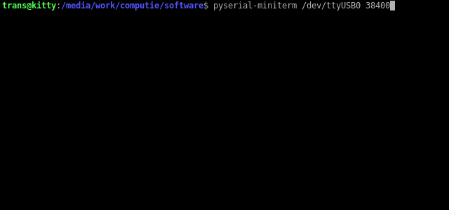
The above video shows connecting over serial from a modern computer after first powering the board on. The monitor
runs first, giving the ">" prompt. The bootloader has been burnt into flash at address 0x20000. From the monitor, the
boot loader is run, which then loads the kernel from the attached compact flash card. Each period (.) character
printed represents 1 kilobyte of data loaded from disk). The boot loader then jumps to the loaded kernel, which
displays boot messages before running the init process from disk. The init process first runs sh /etc/rc", which runs
the ntpdate command to update the system time. It then runs an interactive shell.
Some commands are shown after boot, and then the httpd program is run (which has forking disabled for the time being). From another computer, the curl command is run to issue a request to the board. The httpd program responds with the data "This is a secret message"
References
- S-100 68000 CPU Board
- Tiny68K, 68000 SBC
- Motorola 68000 computer
- 68k Single Board Computer
- Gryphon 68030
- T030
- Building a 68030 computer in 5 stages
- Blitz - 32bit 68030 homebrew with an ISA bus
Get the Source
https://github.com/transistorfet/computieOr clone with:
git clone git@github.com:transistorfet/computie